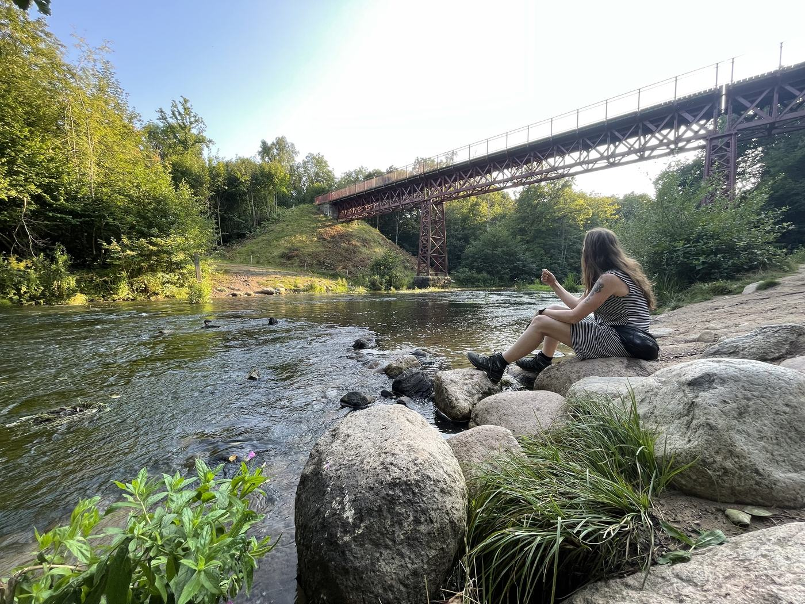
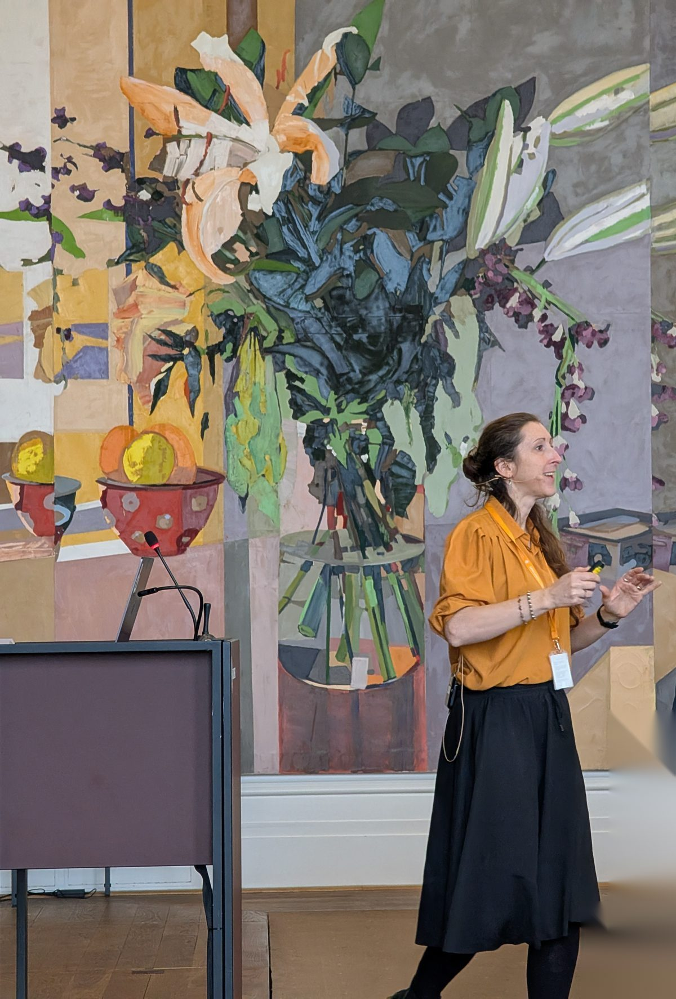
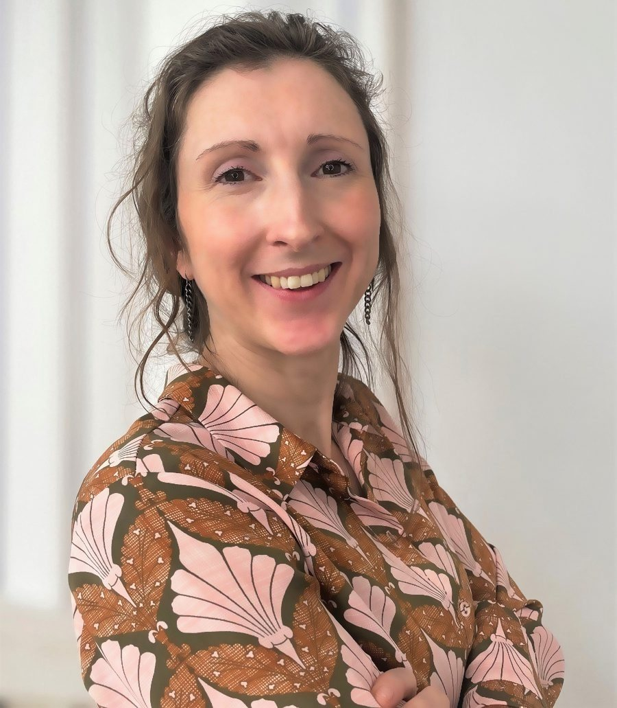

Foredrag
Skaber forståelse, perspektiv og refleksion.
I får nye vinkler på forholdet mellem mennesker og teknologi og et fælles sprog for samtalen.
Når mennesker møder ny teknologi
Mennesket med handler om at gøre teknologi forståeligt og skabe tryghed i en tid med krav om evig tilpasning.
Min mission er at hjælpe mennesker til at finde mening og skabe værdi med teknologi – ikke lade teknologien være meningsskabende i sig selv.
Foredrag, workshops og sparring om kunstig intelligens – med mennesket i centrum.
Mennesket med er et perspektiv på forholdet mellem mennesker og teknologi. Det er en måde at anskue verden på og et værdisæt for de valg, vi træffer i mødet med teknologi.
Kort sagt handler det om at sikre, at beslutninger passerer et menneskes dømmekraft, stillingtagen og refleksion, før de får virkning – og ikke overlades til maskiner alene.
Samtalen om kunstig intelligens kommer let til at handle om teknologien selv; om modeller, funktioner og alt det, maskinen kan. Vi glemmer at spørge, hvad det gør ved os som mennesker, ved vores arbejde, vores relationer og vores måde at træffe beslutninger på.
Mennesket med vender samtalen om, så mennesket bliver hovedpersonen, mens teknologien bliver den metodik, vi bruger til at fortolke og udfolde vores rolle.
Derfor skal teknologien bruges med mennesker, ikke i stedet for mennesker. Med vores dømmekraft. Med vores faglighed. Med vores unikke indsigter.
Mennesket med er også en præventiv dannelsesøvelse i brugen af teknologi, hvor kritisk afstand og aktiv stillingtagen er nødvendige forudsætninger.
Den største udfordring er at sikre, at mennesket forbliver aktivt tænkende, lærende og ansvarligt i mødet med nye teknologier. Derfor bør vi stille os selv spørgsmålene:
Hvis teknologien gør os hurtigere, hvad skal vi så bruge den frigivne tid til?
Det er det spørgsmål, vi taler mindst om. Og måske det vigtigste. For effektivitet er ikke et mål i sig selv. Frigivet tid er kun værdifuld, hvis vi bruger den på noget, der betyder noget.
Tid til at blive klogere. På vores fag, på hinanden, på den teknologi vi arbejder med.
Tid til samtalen. Til kollegaen, borgeren, kunden. Til alt det mellem mennesker, som ingen teknologi kan og bør overtage.
Tid til at komme dig over en hverdag, hvor forhastelse er blevet normen, og et hul i kalenderen føles som angstprovokerende spildtid.
Tid til at give en hånd med, lægge en skulder til – og tid til ørenlyd og hjerterum.
Tid til at fordybe sig i stedet for kun lige at nå det vigtigste.
Tid til at gøre tingene ordentligt. Læse en ekstra gang, tænke en ekstra tanke, og aflevere noget, man er stolt af.
Tid til at prøve noget af. De bedste idéer opstår sjældent i en fyldt kalender. De opstår, når der er luft.
Tid til at stoppe op og spørge, om vi er på vej det rigtige sted hen. Måske er det den vigtigste brug af den tid, teknologien giver tilbage.

Skaber forståelse, perspektiv og refleksion.
I får nye vinkler på forholdet mellem mennesker og teknologi og et fælles sprog for samtalen.
Omsætter perspektiver til praksis.
I arbejder med konkrete situationer, værktøjer og dilemmaer fra jeres egen hverdag.
Gør teknologi til en del af hverdagen.
Fra de første spørgsmål til reel anvendelse, nye vaner og varig forankring.
Til ledere, fagpersoner og organisationer.
En tænke- og refleksionspartner til de spørgsmål, der opstår, når mennesker og teknologi mødes.

På tværs af organisationer går de samme mønstre igen, når mennesker møder ny teknologi.
»Bliver jeg overflødig?« Spørgsmålet bliver sjældent sagt højt, men det fylder i de fleste rum. Bekymringen forsvinder ikke af sig selv. Den bliver mindre, når teknologien bliver konkret – og når der er plads til at spørge.
At kunstig intelligens enten altid har ret, eller at den slet ikke kan bruges til noget – hvor sandheden som oftest ligger et sted midt imellem.
Licenserne er købt, før mennesket er med. Man har købt ind på teknologien før samtalen om, hvorfor og hvordan den kan anvendes. Det er oftest her, skuffelser og bekymring opstår.
Forandring lykkes positivt, når den tager afsæt i hverdagens opgaver – i det konkrete og ikke det flyvske. Der, hvor der er plads til at øve sig og spørge, når man er i tvivl.
Mit navn er Maja Fries Harsberg.
Mennesket med er et perspektiv på forholdet mellem mennesker og teknologi. Jeg hjælper med at omsætte det til praksis for mennesker og organisationer.
Jeg er cand.mag. i kultur, kommunikation og globalisering og har arbejdet med projektledelse, forretningsrådgivning og ledelse i it-branchen. I dag hjælper jeg mennesker og organisationer med at forstå, anvende og tage stilling til kunstig intelligens.
Mit arbejde begynder sjældent med teknologien. Det begynder med de mennesker, der skal bruge den.
Jeg gør det komplekse forståeligt og hjælper mennesker med at bevare dømmekraft, retning og mening i en tid præget af teknologisk forandring.
For teknologien er sjældent udfordringen. Det er forståelsen af den.
